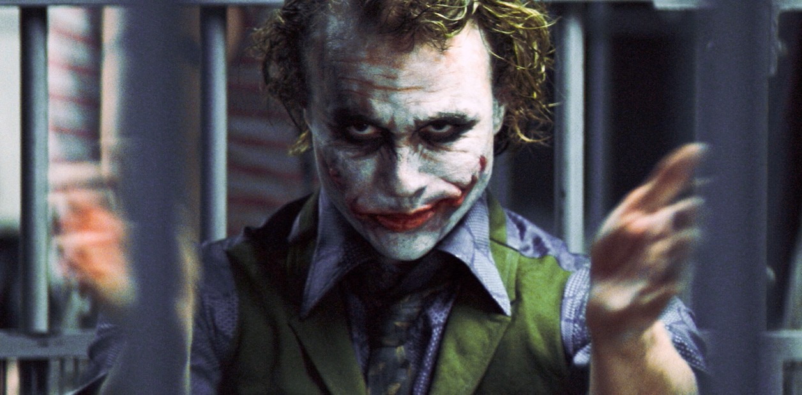

El Joker
Es un "agente del caos" anarquista y psicópata que no tiene un origen definitivo en la película, aunque existen varias teorías sobre su pasado, como la de ser un veterano de guerra con habilidades de combate y manipulación.
En una de las escenas clave, el Joker cuenta dos versiones diferentes de cómo obtuvo sus cicatrices en la cara, lo que refuerza la idea de que su pasado es una mentira calculada.


- Su historia comienza en Detective Comics #1
- Asalto a una fábrica química y la caída en un tanque de desechos, que lo deja desfigurado
- Se convierte en un bromista más inofensivo
- Responsable de tragedias como la parálisis de Barbara Gordon
- Responsable de la muerte de Jason Todd